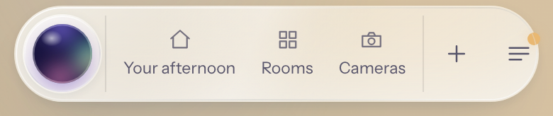

🔈RightPlaying with the Left

A line for a speaker that can't play alone. Left and Right are one stereo pair, set up on the speakers themselves. Right never plays on its own.
Are these two one pair?
The Left and the Right are playing the same song in the living room. As a pair, they're one card that plays, pauses and turns up together.
One pairTwo speakers
A question the speakers already answered. Both say on the network that they are one pair, left and right. And Two speakers would be untrue: they can't be played apart.